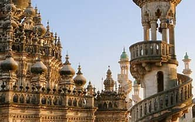

Welcome To Junagadh ....

Girnari Moj
Junagadh is the city and headquarters of Junagadh district in the Indian state of Gujarat. Located at the foot of the Girnar hills, 355 kilometres (221 mi) southwest of Ahmedabad and Gandhinagar (the state capital), it is the seventh largest city in the state.Literally translated, Junagadh means "Old Fort".After a brief struggle between India and Pakistan, Junagadh voted to join India in a plebiscite held on 20 February 1948. It was a part of Saurashtra state and later Bombay state. In 1960, in consequence of the Maha Gujarat movement, it became part of the newly formed Gujarat state.
As per the legend, the founder of the Ror Dynasty Raja Dhaj, Ror Kumar, alias Rai Dyach, ruled over the principality of Jhunagarh in the fifth century BC.[4] An early structure, Uparkot Fort, is located on a plateau in the middle of town. It was originally built in 319 BCE during the Mauryan dynasty by Chandragupta.[citation needed] The fort remained in use until the 6th century, when it was abandoned for about 300 years, then rediscovered by the Chudasama ruler Graharipu in 976 CE.The fort was subsequently besieged 16 times over a 1000-year period. One unsuccessful siege lasted twelve years.Within 2 kilometres (1.2 mi) of Uparkot Fort is an inscription with fourteen Edicts of Ashoka on a large boulder.[6] The inscriptions are in Brahmi script in a language similar to Pali and date from 250 BCE. On the same rock there is a later inscription in Sanskrit, which was added around 150 CE by Mahakshatrap Rudradaman I, the Saka (Scythian) ruler of Malwa, and a member of the Western Kshatrapas dynasty, and which has been described as "the earliest known Sanskrit inscription of any extent". Another inscription dates from about 450 CE and refers to Skandagupta, the last Gupta emperor. Old rock-cut Buddhist caves in this area, dating from well before 500 CE, have stone carvings and floral work. There are also the Khapra Kodia Caves north of the fort, and the Bava Pyara Caves south of the fort. The Bava Pyara caves contain artworks of both Buddhism and Jainism.The Maitraka dynasty ruled Gujarat from 475 to 767 CE. The founder of the dynasty, General Bhatarka, military governor of Saurashtra peninsula under the Gupta empire, established himself as the independent ruler of Gujarat around the last quarter of the 5th century.
Famous Places in Junagadh City
- Tulsishyam
- Uparkot Fort
- Kamleshwar Dam
- Navghan Kuvo
- Darbar Hill Museum
- Science Musuem
- Bava Pyara Caves
- Jatashankar Mahadev Temple
Junagadh City Famous Food Item
- Gol Gapa
- Dahi Vadas
- Dhokla
- Kadhi Khichdi
- Dal Bhat
- Spe. Sev Tamata
- Masala Bhakhri
© Copyright Reserved
Go To Main Page